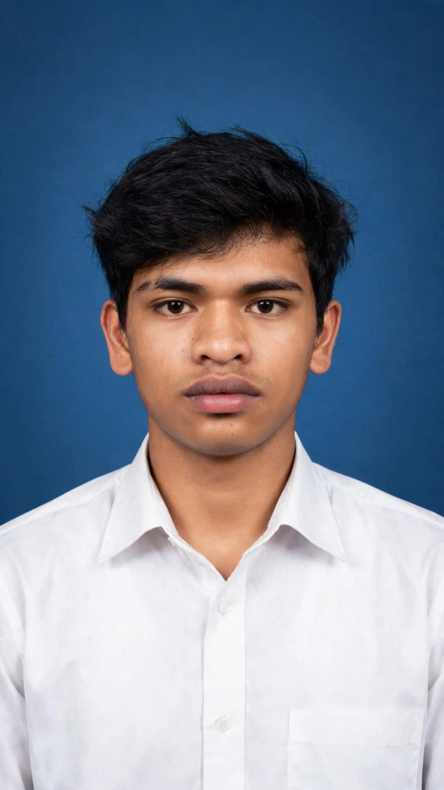

Profil Mahasiswa

Roy Sion Saputra Manalu
NIM: 2582016
Program Studi: Sistem Informasi
Universitas Advent Indonesia
Email: 2582016@unai.edu
Halo, nama saya Roy Sion Saputra Manalu. Saya adalah mahasiswa Sistem Informasi di Universitas Advent Indonesia (UNAI) dengan NIM 2582016. Saya berasal dari keluarga sederhana di kampung halaman.
Cerita Liburan Semester: Liburan semester ini sangat berkesan dan bermakna bagi saya. Pada dua minggu pertama liburan, saya mudik ke kampung halaman untuk bertemu dengan orang tua dan keluarga. Sebagian besar waktu liburan saya gunakan untuk membantu orang tua bekerja di ladang cabai. Setiap pagi saya membantu menyemprot hama, mencor pupuk, dan pada sore harinya memetik hasil panen cabai. Meskipun melelahkan di bawah terik matahari, saya merasa senang karena bisa membantu meringankan pekerjaan orang tua. Hasil penjualan cabai tersebut dikumpulkan untuk membantu biaya kuliah saya pada semester depan. Selain bekerja di ladang, saya juga menyempatkan waktu untuk mengunjungi rumah nenek untuk melepas rindu.
Tidak hanya bekerja, liburan ini juga diisi dengan kegiatan rekreasi yang sangat menyenangkan bersama keluarga. Kami sempat jalan-jalan ke Haranggaol untuk menikmati keindahan alam Danau Toba, mandi-mandi di air yang segar, serta mengadakan acara bakar-bakar bersama keluarga. Momen kebersamaan ini membuat liburan semakin berkesan dan membuat saya lebih semangat untuk kembali kuliah.
Hobi Saya
Beberapa hobi yang saya lakukan di waktu luang:
- Lari
- Mancing
Hobi lainnya:
- Mendengarkan Musik
- Menonton Film
- Coding / Pemrograman
Riwayat Akademik
| No | Semester | Tahun Ajaran | IPK |
|---|---|---|---|
| 1 | Ganjil | 2025/2026 | 3.17 |
| 2 | Genap | 2025/2026 | 3.12 |
Kontak Saya
Email: 2582016@unai.edu
Fakultas: Fakultas Teknologi Informasi
Mata Kuliah: Web Programming I